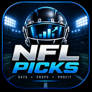

NFL Picks
In Safari, tap Share → Add to Home Screen before opening the app.
NFL Picks mobile launcher • v6.49.0
Open NFL Picks
In Safari, tap Share → Add to Home Screen before opening the app.
NFL Picks mobile launcher • v6.49.0
Open NFL Picks